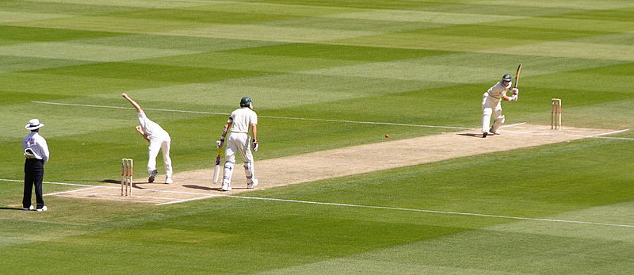
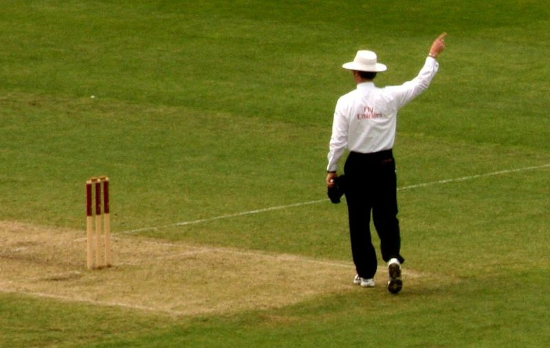

CRICKET
INTRODUCTION

Cricket is a bat-and-ball game played between two teams of 11 players on a field at the centre of which is a rectangular 22-yard long pitch. Each team takes it in turn to bat, attempting to score runs, while the other team fields. Each turn is known as an innings.
The bowler delivers the ball to the batsman who attempts to hit the ball with his bat far enough for him to run to the other end of the pitch and score a run. Each batsman continues batting until he is out. The batting team continues batting until ten batsmen are out, at which point the teams switch roles and the fielding team comes in to bat.
In professional cricket the length of a game ranges from 20 overs of six bowling deliveries per side to Test cricket played over five days. The Laws of Cricket are maintained by the International Cricket Council (ICC) and the Marylebone Cricket Club (MCC) with additional Standard Playing Conditions for Test matches and One Day Internationals.[1]
Cricket was first played in southern England in the 16th century. By the end of the 18th century, it had developed into the national sport of England. The expansion of the British Empire led to cricket being played overseas and by the mid-19th century the first international matches were being held. The ICC, the game's governing body, has 10 full members.[2] The game is most popular in Australasia, England, the Indian subcontinent, the West Indies and Southern Africa.
UMPIRE AND SCORERS

The game on the field is regulated by two umpires, one of whom stands behind the wicket at the bowler's end, the other in a position called "square leg", a position 15–20 metres to the side of the "on strike" batsman. The main role of the umpires is to adjudicate on whether a ball is correctly bowled (not a no ball or a wide), when a run is scored, and whether a batsman is out (the fielding side must appeal to the umpire, usually with the phrase How's That?). Umpires also determine when intervals start and end, decide on the suitability of the playing conditions and can interrupt or even abandon the match due to circumstances likely to endanger the players, such as a damp pitch or deterioration of the light.
FIELDING

All eleven players on the fielding side take the field together. One of them is the wicket-keeper aka "keeper" who operates behind the wicket being defended by the batsman on strike. Wicket-keeping is normally a specialist occupation and his primary job is to gather deliveries that the batsman does not hit, so that the batsmen cannot run byes. He wears special gloves (he is the only fielder allowed to do so), a box over the groin, and pads to cover his lower legs. Owing to his position directly behind the striker, the wicket-keeper has a good chance of getting a batsman out caught off a fine edge from the bat. He is the only player who can get a batsman out stumped.
Apart from the one currently bowling, the other nine fielders are tactically deployed by the team captain in chosen positions around the field. These positions are not fixed but they are known by specific and sometimes colourful names such as "slip", "third man", "silly mid on" and "long leg". There are always many unprotected areas.
The captain is the most important member of the fielding side as he determines all the tactics including who should bowl (and how); and he is responsible for "setting the field", though usually in consultation with the bowler.
In all forms of cricket, if a fielder gets injured or becomes ill during a match, a substitute is allowed to field instead of him. The substitute cannot bowl, act as a captain or keep wicket. The substitute leaves the field when the injured player is fit to return.
Off the field and in televised matches, there is often a third umpire who can make decisions on certain incidents with the aid of video evidence. The third umpire is mandatory under the playing conditions for Test matches and limited overs internationals played between two ICC full members. These matches also have a match referee whose job is to ensure that play is within the Laws of cricket and the spirit of the game.
The match details, including runs and dismissals, are recorded by two official scorers, one representing each team. The scorers are directed by the hand signals of an umpire. For example, the umpire raises a forefinger to signal that the batsman is out (has been dismissed); he raises both arms above his head if the batsman has hit the ball for six runs. The scorers are required by the Laws of cricket to record all runs scored, wickets taken and overs bowled; in practice, they also note significant amounts of additional data
SOURCE:
BACK